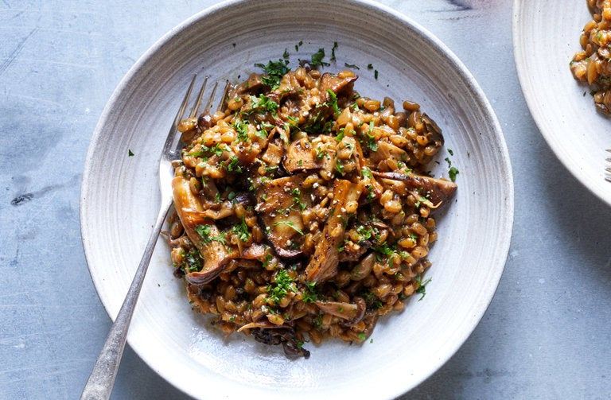

Farro With Mushrooms

Farro is chewier than Italian rice and doesn't release starch when it's cooked, so there's no need to stir it the way you'd stir a risotto. This hearty dish has a rich, earthy flavor. Although it takes about twice as long as a risotto to cook, it doesn't require tending.
INGREDIENTS
Yield: 6 servings
- ½ ounce (½ cup, approximately) dried porcini mushrooms
- 1 quart chicken stock or vegetable stock
- 1½ cups farro
- 2 tablespoons extra virgin olive oil
- ½ cup finely chopped onion
- 1 pound cremini mushrooms or wild mushrooms (or a mixture of the two), cleaned, trimmed and sliced
- Salt to taste
- 2 large garlic cloves, green shoots removed, minced
- 2 teaspoons chopped fresh rosemary
- ½ cup dry white wine
- Freshly ground pepper to taste
- 1 to 2 ounces Parmesan cheese, grated (¼ to ½ cup)
- ¼ cup chopped fresh parsley
PREPARATION STEPS
- Place the farro in a bowl, and pour on enough hot water to cover by an inch. Let soak while you prepare the remaining ingredients. Drain.
- Place the dried mushrooms in a large Pyrex measuring cup or bowl, and pour in 2 cups boiling water. Let sit 30 minutes.
- Drain the mushrooms through a strainer set over a bowl and lined with cheesecloth or a paper towel. Squeeze the mushrooms over the strainer, then rinse in several changes of water to remove grit. Chop coarsely if the pieces are large and set aside. Add the broth from the mushrooms to the stock. You should have 6 cups (add water if necessary). Place in a saucepan, and bring to a simmer. Season with salt to taste.
- Heat the oil over medium heat in a large, heavy nonstick skillet. Add the onion. Cook, stirring, until it begins to soften, about three minutes. Add the fresh mushrooms. Cook, stirring, until they begin to soften and sweat. Add salt to taste, the garlic and rosemary. Continue to cook, stirring often, until the mushrooms are tender, about five minutes. Add the farro and reconstituted dried mushrooms. Cook, stirring, until the grains of farro are separate and beginning to crackle, about two minutes. Stir in the wine and cook, stirring until the wine has been absorbed. Add all but about 1 cup of the stock, and bring to a simmer. Cover and simmer 50 minutes or until the farro is tender; some of the grains will be beginning to splay. Remove the lid, and stir vigorously from time to time. Taste and adjust seasoning. There should be some liquid remaining in the pot but not too much. If the farro is submerged in stock, raise the heat and cook until there is just enough to moisten the grains, like a sauce. If there is not, stir in the remaining stock. If not serving right away, cover and let stand. Just before serving, bring back to a simmer, add the Parmesan, parsley and pepper, and stir together. Remove from the heat and serve.
Tip
Advance preparation: You can make this several hours or even a day ahead and reheat. Add a little stock to it, and stir over medium heat to reheat.
*****